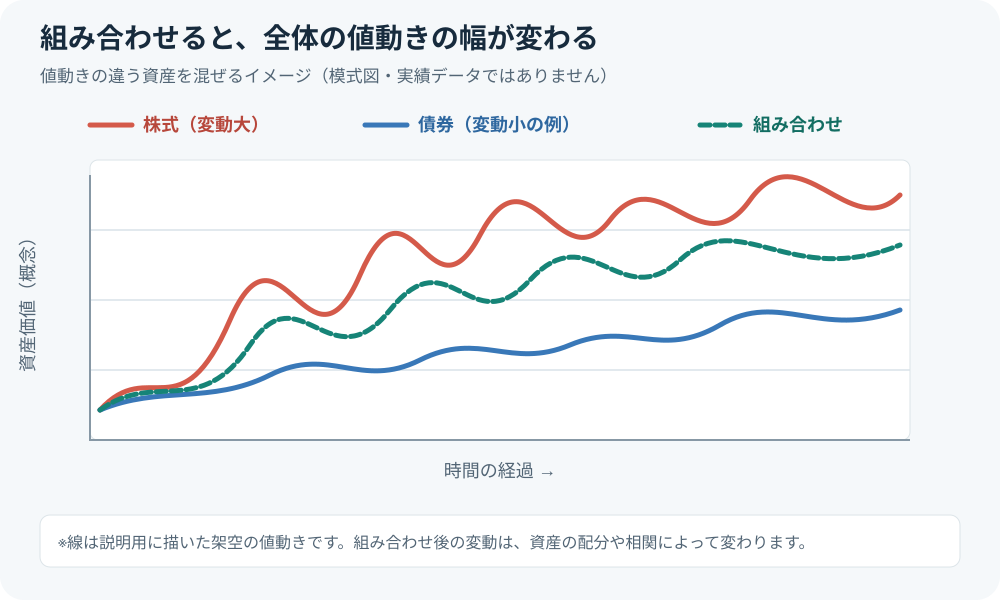
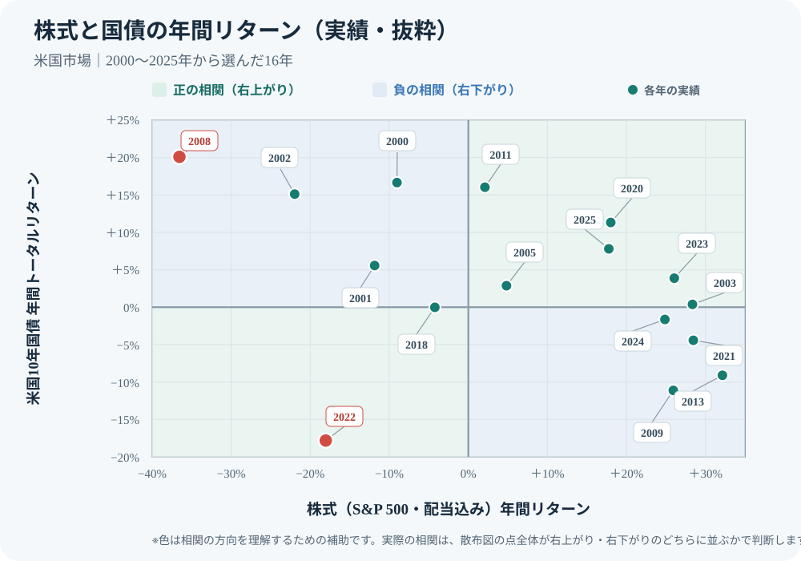
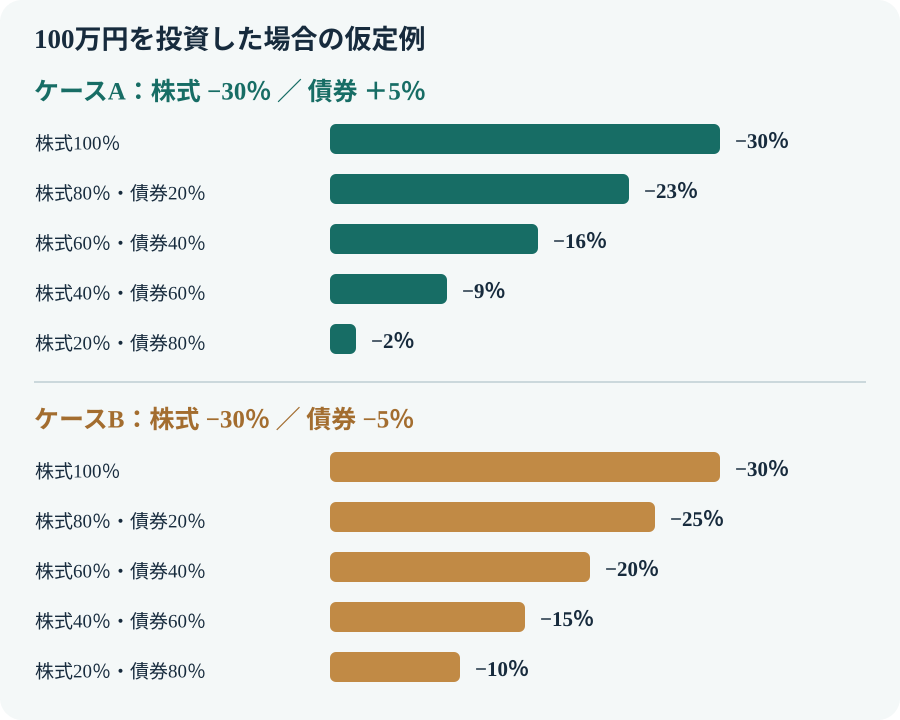

カテゴリツリーを開く
株式と債券を組み合わせる意味とは？相関とリスク分散の考え方
株式と債券は、値動きに影響する要因が異なります。両方を保有すると、株式だけを持つ場合とは異なる値動きになる可能性があります。ただし、債券がいつも株式の下落を補うわけではありません。この記事では、組み合わせる意味と限界を、相関と具体的な損益例から整理します。
株式と債券を組み合わせる目的は、単に債券を増やして安全にすることではありません。異なる値動きの資産を組み合わせ、ポートフォリオ全体の値動きを調整することです。効果は相関や市場環境によって変わります。
1. 株式と債券は何が違う？
株式は企業の所有権の一部であり、企業利益や成長期待、景気、投資家心理などの影響を受けます。債券は国や企業などが資金を借り入れるために発行するもので、発行体の信用力、金利、残存期間などが価格に影響します。
| 比較点 | 株式 | 債券 |
|---|---|---|
| 主な収益源 | 株価の値上がり、配当 | 利子、債券価格の変動 |
| 主な価格変動要因 | 企業業績、景気、成長期待、需給 | 市場金利、発行体の信用力、残存期間 |
| 主なリスク | 企業業績悪化、株価下落、為替変動など | 金利変動、信用悪化、為替変動、流動性など |
| 保有する意味 | 企業の成長や利益の分配を取り込む | 利子収入や株式とは異なる値動きを取り込む |
債券は株式より値動きが小さい傾向のものもありますが、すべての債券が低リスクというわけではありません。満期までの期間が長い債券ほど金利変動の影響を受けやすく、信用力の低い発行体の債券には信用リスクがあります。外国債券には為替変動も加わります。
2. 組み合わせると値動きはどう変わる？
株式と債券を組み合わせると、全体の損益はそれぞれの損益を保有割合に応じて合算したものになります。下の図は、長期では資産価値が右肩上がりになる一方、株式は大きく、債券は比較的小さく変動する傾向と、組み合わせた場合の変動幅を模式的に表しています。線は値動きの方向や幅を理解するための例で、実際の指数データではありません。

株式より債券の変動幅が小さい傾向があっても、債券が必ず株式と反対方向に動くわけではありません。インフレや金利上昇への懸念が強まる局面などでは、株式と債券が同時に下落することもあります。組み合わせの効果は、保有する債券の種類や期間、通貨、市場環境によって異なります。
3. 相関係数とは？
2つの資産の値動きがどの程度同じ方向に動くかを示す指標の一つが「相関係数」です。一般に−1から＋1の範囲で表されます。
| 相関係数 | 値動きの関係 | 組み合わせた場合の見方 |
|---|---|---|
| ＋1に近い | 同じ方向に動きやすい | 値動きを打ち消す効果は小さくなりやすい |
| 0に近い | 直線的な連動が小さい | 組み合わせによる変動抑制が期待できる場合がある |
| −1に近い | 反対方向に動きやすい | 値動きを打ち消す効果が大きくなりやすい |
相関係数が低い資産を組み合わせると、同じリターンの資産だけを保有する場合に比べ、ポートフォリオ全体の価格変動を抑えられる可能性があります。ただし、相関係数は過去の一定期間の値動きから計算する指標です。計測期間や通貨、対象指数によって数値は変わり、将来も同じ関係が続くとは限りません。
株式と債券の相関は、時代によって変わる
米国の株式と国債の月次リターンを調べた研究では、相関は長い期間でも一定ではありませんでした。1970〜1999年の平均は＋0.35、2000年〜2023年6月は−0.29です。前の期間は同じ方向に動きやすく、後の期間は逆方向に動きやすい関係でした。つまり「株式と債券はいつも逆に動く」という決まりはありません。参考資料1
| 米国株・国債の月次リターン | 平均相関 | 読み方 |
|---|---|---|
| 1970〜1999年 | ＋0.35 | 同じ方向に動きやすい |
| 2000〜2023年6月 | −0.29 | 逆方向に動きやすい |
実際の年間リターンを散布図で見る
下図は、米国株（S&P 500・配当込み）を横軸、米国10年国債（利息・価格変動込み）を縦軸に置いた、2000〜2025年の代表的な年の実績です。点が右上なら両方プラス、左下なら両方マイナス、左上・右下なら異なる方向に動いた年です。背景の淡い色は、点全体が右上がりに並ぶ正の相関と、右下がりに並ぶ負の相関の方向を示す補助表示です。各年の点が入る象限だけで相関が決まるわけではありません。全期間の相関を算出する図ではなく、実際に起きた年の組み合わせを確認するための抜粋です。

たとえば2008年は株式−36.55％・国債＋20.10％で左上に位置します。一方、2022年は株式−18.04％・国債−17.83％で左下に位置し、株式と債券が同時に下落した例です。反対方向に動く年も、同時に下落する年もあることが、実績から確認できます。
さらに、2022年は株式と債券が年間リターンでともにマイナスになりました。急なインフレと金利上昇が、株価と債券価格の両方を押し下げたためです。一方、Vanguardの分析では、英国株・債券の関係は2023年に逆方向へ戻ったとされています。短期では相関がプラスに転じることもあり、時期や対象市場によって姿が変わります。参考資料2
債券は株式より値動きが小さい傾向がありますが、値動きの小ささと「株式を逆方向に補うこと」は別の性質です。債券自体の価格変動が小さくても、株式と同時に下がれば分散効果は弱まります。
数値の実例として、GPIF（年金積立金管理運用独立行政法人）を見てみます。GPIFは、私たちの公的年金の積立金を長期運用する機関です。年金資金をどの資産にどれくらい配分するか検討する際、資産同士の値動きの関係も考慮しています。2025年4月からの基本ポートフォリオの策定に用いた相関係数では、国内債券と国内株式は−0.254、外国債券と外国株式は＋0.560でした。つまり、国内同士はやや逆方向、外国同士は同じ方向に動く傾向を置いた前提です。
| 資産の組み合わせ | GPIFが基本ポートフォリオ策定に用いた相関係数 |
|---|---|
| 国内債券 × 国内株式 | −0.254 |
| 外国債券 × 外国株式 | ＋0.560 |
| 国内債券 × 外国株式 | −0.125 |
| 外国債券 × 国内株式 | ＋0.271 |
また、相関係数は値動きの方向の関係を示すもので、損失の大きさや期待リターンを直接示すものではありません。相関だけで資産を選ばず、価格変動の大きさ、費用、投資期間、保有目的も合わせて確認します。
4. 組み合わせによる損失額を比べる
株式100万円だけを保有する場合と、債券を組み合わせる場合を比較します。次の2つは、組み合わせの違いを理解するための仮定です。実際の相場や将来予測ではありません。
ケースA：株式が下落し、債券が上昇した場合
株式が30％下落し、債券が5％上昇したと仮定します。
| 配分 | 株式の損益 | 債券の損益 | 合計損益 | 下落後の資産 |
|---|---|---|---|---|
| 株式100％ | −30万円 | 0円 | −30万円（−30％） | 70万円 |
| 株式80％・債券20％ | −24万円 | ＋1万円 | −23万円（−23％） | 77万円 |
| 株式60％・債券40％ | −18万円 | ＋2万円 | −16万円（−16％） | 84万円 |
| 株式40％・債券60％ | −12万円 | ＋3万円 | −9万円（−9％） | 91万円 |
| 株式20％・債券80％ | −6万円 | ＋4万円 | −2万円（−2％） | 98万円 |
ケースB：株式と債券が同時に下落した場合
株式が30％下落し、債券も5％下落したと仮定します。
| 配分 | 株式の損益 | 債券の損益 | 合計損益 | 下落後の資産 |
|---|---|---|---|---|
| 株式100％ | −30万円 | 0円 | −30万円（−30％） | 70万円 |
| 株式80％・債券20％ | −24万円 | −1万円 | −25万円（−25％） | 75万円 |
| 株式60％・債券40％ | −18万円 | −2万円 | −20万円（−20％） | 80万円 |
| 株式40％・債券60％ | −12万円 | −3万円 | −15万円（−15％） | 85万円 |
| 株式20％・債券80％ | −6万円 | −4万円 | −10万円（−10％） | 90万円 |

ケースAでは債券の上昇が株式の損失を一部補いました。一方、ケースBでは債券も下落しているため、損失は残ります。債券を組み入れると損失が必ず防げるのではなく、株式とは異なる値動きになる可能性をポートフォリオに取り込む、と理解することが大切です。
5. 現金を増やす方法とは何が違う？
株式の値下がりによる損失を小さくしたいだけなら、株式の保有割合を下げて現金・預貯金を増やす方法もあります。現金は預金金利や物価の影響を受けますが、株式や債券のように市場価格が日々変動する資産ではありません。
| 比較点 | 現金・預貯金 | 債券 |
|---|---|---|
| 価格変動 | 円預金の元本は原則として額面で管理できる | 市場金利や信用力などで価格が変動する |
| 主な役割 | 生活費、緊急時の備え、近く使う資金 | 利子収入や株式とは異なる値動きを取り込む |
| 主な注意点 | 物価上昇で実質的な購買力が低下することがある | 金利・信用・為替などにより元本割れすることがある |
| 資産全体への影響 | 投資資産の割合を下げ、全体の価格変動を抑えやすい | 株式との相関次第で全体の値動きを変える |
現金を増やすことは、価格変動する資産への投資額そのものを減らす方法です。債券を組み入れることは、株式とは異なる収益・価格変動の特徴を持つ資産を加える方法です。どちらが適切かは、資金を使う時期や目的によって異なります。
6. 債券を組み入れるか考えるポイント
- 投資する目的と期間：いつ使う資金なのか、どの程度の期間保有できるのかを確認します。
- 許容できる損失額：株式だけの場合と債券を組み合わせた場合について、下落率だけでなく円で損失額を試算します。
- 過去の下落局面：想定だけでなく、過去にどの程度の下落が起きたかも確認します。指数の下落幅と回復期間は「最大ドローダウンとは？」で解説しています。
- 債券の種類：国内・外国、国債・社債、短期・長期などで金利・信用・為替リスクが異なります。
- 費用と税金：投資信託で保有する場合は信託報酬やその他費用、売買時のコストも確認します。
- 家計全体の現金：預貯金を含めた金融資産全体で、株式・債券・現金がどの割合になっているかを把握します。
配分の割合に万人共通の正解はありません。株式と債券を何対何にするかを先に決めるのではなく、目的・投資期間・家計・値下がりへの耐性を整理してから考えます。
まとめ
- 株式と債券は、収益の源泉や価格変動に影響する要因が異なる。
- 値動きの異なる資産を組み合わせると、ポートフォリオ全体の変動を抑えられる場合がある。
- 相関係数は過去の値動きの関係を示すもので、将来の関係を保証しない。
- 株式と債券が同時に下落する局面もあり、債券は損失を必ず防ぐものではない。
- 価格変動を抑えるために現金を増やす方法と、異なる値動きの資産を組み合わせる方法は目的が異なる。
公式情報・参考資料
- Molenaar et al., “Empirical Evidence on the Stock–Bond Correlation,” Financial Analysts Journal, 2024 — 米国株と国債の月次リターン相関（1970〜1999年、2000〜2023年6月）。
- Vanguard「Understanding the dynamics of stock/bond correlations」 — 2022年の株式・債券同時下落と、相関が短期で変化する例。
- 米国証券取引委員会（SEC）Investor.gov「Asset Allocation and Diversification」 — 資産配分、分散、投資期間、リスク許容度の考え方。
- 年金積立金管理運用独立行政法人（GPIF）「分散投資の意義③ 卵を一つのかごに盛るな」 — 相関係数の説明と、2025年4月適用の基本ポートフォリオ策定に用いた資産間の相関係数。
- GPIF「基本ポートフォリオの考え方」 — 2025年4月から適用された基本ポートフォリオ。
- 金融庁「資産形成の基本」 — 長期・積立・分散投資の基本。